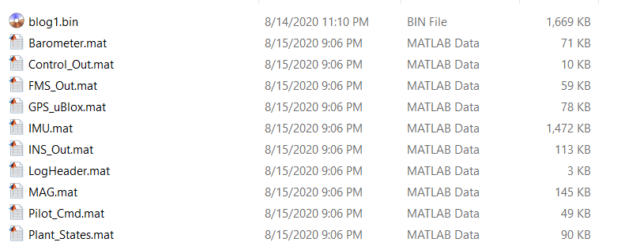

基于模型设计
基于模型的设计（Model-Based Design，简称MBD）是一种数学及可视化的设计方法，用来设计复杂的控制系统，信号处理系统和状态机等。目前大部分无人机飞控系统的研发手段还比较初级，采用传统嵌入式开发方式居多。这种方式固然有其优势，但是其劣势也越来越明显。比如花费大量的精力在嵌入式代码的编写以及测试。当系统变得越来越庞大，功能越来越复杂后，对代码的维护变得越来越困难，代码的可移植性也变得越来越差。这就导致对算法本身的优化和验证不够，从而很难开发出真正高效而稳定的飞控系统。基于 Simulink 的 MBD 的开发模式能够很好的改善这些问题，其已经广泛应用于工业界，比如汽车，飞机制造，电力电子，航天等领域。
总结起来，MBD 的开发方式具有以下优势：
- 提升算法开发效率，节省时间和人力成本。
- 减少手动编写代码过程中产生的错误，提升系统稳定性。
- 提升算法的优化和 Debug 效率，简化系统测试和验证流程。
- 提高算法的可维护性和可移植性。
Firmament 作为目前唯一一个全面支持 MBD 开发模式的开源自驾仪系统，继承了 MBD 开发模式的所有优点。Firmament 提供了 MBD 所需要的完整的功能模块和工具链支持，助您快速开发出高性能、安全可靠的自驾仪系统。
模型结构
Firmament 的模型主要由四个大的算法模型组成：
- Plant : 被控对象模型，如无人机，无人车/船，机器人等。对象模型包括了动力学模型（Dynamic Model），作动器模型（Actuator Model），环境模型（Environment Model）和传感器模型（Sensor Model）。通过对不同的被控对象进行科学的建模，以达到对不同被控对象进行闭环仿真的目的。
- INS : 惯性导航系统 (Inertial Navigation System) 。通过多传感器融合算法得到被控对象的状态信息（如姿态、速度和位置等）以及各个传感器的健康状况信息等。
- FMS : 飞行管理系统 (Flight Management System) 。主要负责飞行逻辑相关的控制，内部主要由状态机（State Machine）实现。包括飞行模式控制，自动起飞降落，轨迹跟踪控制，安全检测等功能。
- Controller : 控制器模型。基于 FMS 输出的指令信息和 INS 输出的状态信息进行速度环、姿态环和角速度环的控制。控制器的输出经由控制分配（Control Allocation）将控制信号转成作动器（电机）信号。
Firmament 作为一款通用的开源自驾仪系统，目的是提供一个平台，让广大开发者可以基于此快速开发和部署自己的算法模型。通过不断扩充算法模型库，最终达到可以支持各种算法和被控对象的目的。
为了让广大开发者可以更好的使用 Firmament 平台，目前系统提供了一套完整的多旋翼的基础算法模型。包括：
- 一个功能强大的基础导航模型：基于互补滤波算法 (Complementary Filter) 的通用导航模型，支持的传感器包括： IMU，磁力计，气压计，GPS，超声测距仪和光流传感器（也可扩展其它传感器的融合）。导航输出的状态信息包括：姿态，速度，世界坐标位置 （经纬高），相对位置，对地高度，陀螺零偏，加速度零偏，传感器健康状态，导航系统状态等信息。适用于大部分的被控对象（无人机，无人车/船，机器人等）和应用场景。
- 一个基础的飞行管理系统模型：包括飞行模式控制（定点，定高，手动，特技模式等），解锁/上锁逻辑，自动起飞降落，安全检查等逻辑控制。
- 一个基础的控制模型：基于串级 PID 的控制器模型和控制分配。
- 多旋翼的对象模型：包括动力学模型，作动器模型，环境模型和传感器模型等。
各个模块可以单独编译生成 C/C++ 源码并无缝嵌入到 Firmament 飞控系统中。注：各个算法模块可以以各自单独的频率执行。
注意：Firmament 系统默认 Plant、INS 以 500Hz 频率执行，FMS 以 125Hz 频率执行，Controller 以 250Hz 频率执行，各个模块的执行频率可调整。目前系统支持的最大模型执行频率由 Systick 的执行频率决定，默认为 1 KHz。
可以在通用算法模型的基础上进行修改，从而实现二次开发的目的。除此之外，Firmament 还提供了一套算法模型的模板，让您可以基于模板快速开发新的算法模型。
模型接口定义
为了让不同算法、不同被控对象的模型之间可以通用，Firmament 平台定义了一套标准的模型接口 （Firmament Model Interface, FMI）。只要您的模型符合 FMI 的接口定义，便可以无需任何修改地无缝合入飞控系统中，同时也可以兼容其它的算法模型。具体的模型接口定义请点击这里查看。
当然，如果您要修改模型接口定义也是可以的，不过需要对模型和飞控部分做些许的修改，具体修改方法请参照后面章节的内容。
模型仿真
模型仿真功能在飞控系统开发的各个阶段都占有非常重要的地位。在项目前期，模型在环仿真可以帮助快速发现并解决软件中存在的问题， 使系统功能快速落地。在项目中后期，软件在环/硬件在环可以快速测试并验证系统在真实平台上的表现，并得到大量的测试数据，加速系统功能迭代。
Firmament 平台提供了模型在环仿真 (MIL)，硬件在环仿真 (HIL) 以及开环仿真 (Open-Loop Simulation) 的功能，基本涵盖了V型开发流程 (如下图所示) 所需的大部分仿真功能。对于其它的仿真模式，如软件在环仿真 (SIL) 环和芯片在环仿真 (PIL) 后续也会很快支持。

模型在环仿真
模型在环仿真是完成模型的初步设计后进行的第一步仿真工作。刚设计好的算法难免会有很多缺陷和Bug，我们肯定不会希望拿到实际上平台上进行验证（可能导致灾难性的后果）。而模型在环仿真可以帮助我们完成系统功能的初步测试。 Firmament 的 MIL 仿真模型结构如下图所示。

它包括我们前面所述的四大算法模块（Plant, INS, FMS, Controller），由于包含了被控对象模型，从而构成了一个闭环控制系统。MIL 可以很好地验证跟被控对象无关的功能（如逻辑功能），而与被控对象相关功能的仿真精度，则取决于被控对象模型建立的精度。通过科学的建模手段对被控对象进行建模，可以得到和真实世界行为十分接近的仿真数据。
遵循以下步骤进行 MIL 仿真：
- 执行
$FMT_Model/script/system_init.m脚本，对 FMT Model 进行初始化。 - 打开模型
$FMT_Model/model/Simulation/MIL_SIM.slx。 - 选择 *Pilot Input (遥控信号) 信号的输入方式（Joystick Input 或者 Mavlink）。
- 点击
Run运行模型。
目前支持的遥控信号输入方式为通过游戏手柄接入和或者 Mavlink包的方式。若选择手柄的方式，则在运行模型前，请先将手柄通过 USB 插入电脑 ( Matlab支持大部分的游戏手柄，具体请参考 Joystick Input 模块的使用 )。如需使用 Mavlink 的方式，则需将飞控的FMT_OUTPUT_PILOT_CMD 宏开关打开，重新编译FMU固件并进行下载，然后将飞控通过 USB 连接到电脑上。在 Pilot Input/Mavlink 模块中选择飞控对应的串口。
MIL 执行完后，可以查看模型的内部和输出仿真数据。查看数据的方式有很多，这里仅介绍最常用的一种，即 Simulation Data Inspector 。
- 首先需要打开需要记录信号的 Logging 功能。具体方式为单击要记录的信号线，这时候会出现三个蓝色的小圆点，将鼠标移动到小圆点上，会出现
Enable Data Logging的选项。选择，这时候信号线旁边将出现一个小的信号标志，表示这条信号将被记录下来。 - 第二步运行 MIL 模型。
- 模型运行结束后，打开 Simulation Data Inspector (也可在 MIL 运行的过程中观察)，打开后的界面如下。左边列出了所有已经记录的信号（名称跟所记录信号线的名称相同）。选中要查看信号，在右边进行显示。关于更多的操作方法，请参考 Matlab 官方文档。

硬件在环仿真
硬件在环仿真是将算法部署到真实的硬件设备上，从而测试算法在真实硬件上的行为。跟 MIL 仿真相比较， HIL 是更接近于算法在真实世界中表现的一种仿真方式。它不光可以用来测试算法模块，也可以测试嵌入式软件平台的功能。
Firmament 支持两种 HIL 仿真模式：
- Standard HIL: 即标准的 HIL 仿真。被控对象模型运行在飞控外部的硬件平台上 （通常为一个专门的实时仿真电脑），而其它算法模块（INS，Controller，FMS）则是运行在飞控上。
- Simulator-in-hardware: 跟 HIL 不同，SIH 中对象模型是运行在飞控内部而非外部。这样就不需要一台额外的的实时仿真电脑来运行对象模型，同时也省去了中间的信息通信，是一种更廉价和更实时的硬件在环仿真模式。
SIH 仿真
遵循以下步骤进行 SIH 仿真：
- 确保待仿真模型已经有合入飞控系统（包括 Plant 被控对象模型），打开
FMT_USING_SIH的宏开关，重新编译 FMU 固件并下载。 - 启动飞控，将在控制台看到如下输出。
[1686] I/Status: SIH Simulation
- 连接地面站并进行飞行测试。
SIH 虽然是一种更廉价，更实时的硬件在环仿真模式，但是它也有它的一些缺点。比如要模拟多机仿真，由于飞控硬件平台算力有限，很难或者无法同时运行多个对象模型。另外，SIH 这种方式也很难模拟视觉相关功能以及跟仿真世界中的其它的物体的碰撞等物理行为。所以，如果要对比较复杂的场景进行仿真，还是建议使用标准的 HIL 仿真模式。
HIL 仿真
TBA
开环仿真
开环仿真是 MBD 开发模式的一个“杀手锏”功能，它为算法模型的调试与优化提供了一种非常高效的途径。
大部分客机，军机上都配有黑匣子，用来记录飞行数据。当发生空难时，整个事故过程中的飞行参数就能从黑匣子中找到，人们便可知道飞机失事的原因。Firmament 也提供了类似黑匣子的功能，即 BLog 日志模块，可以实时记录需要的任何数据。通过记录少量的模型输入数据，将生成的 blog 日志文件导入开环仿真模型，即可完全重现当时的飞行场景。 Firmament 的开环仿真模型结构如下图：

Firmament 平台目前可以做到开环仿真的结果跟实际的结果100%拟合，这得益于 Firmament 飞控系统的高效和硬实时特性。如下图所示为导航的输出，红色为开环仿真的结果 (500Hz)，蓝色为硬件上导航实际输出的结果 (100Hz频率记录)。可以看到两者完全拟合（图中不拟合的部分是由于记录实际模型输出的频率低于实际模型的运行频率）。

遵循以下步骤进行开环仿真：
- 将
BLOG_MODE参数设置为2或者3，从开机记录 blog。由于算法模型是从开机开始运行，如果不从开机就开始记录数据的话，模型的部分初始数据将会丢失，导致开环仿真的结果跟实际模型输出有差异。 - 重启飞控，在控制台将看到如下输出，表示已经开启 blog 日志记录。这里提示了当前日志的存储路径和文件名
/log/session_6/blog1.bin。
[1662] I/BLog: start logging:/log/session_6/blog1.bin
- 进行实际飞机或者仿真飞行。
- 飞行完成后，停止 blog 记录。如果
BLOG_MODE=2，则会在系统Disarm的时候自动停止 blog 的记录，如果BLOG_MODE=3，则需要在控制台输入blog stop指令来停止日志记录。日志停止后，将看到如下输出。这里除了显示当前记录的日志路径和文件名外，还会显示各个Bus数据的记录个数 (record) 和丢包个数 (lost)。 BLog 日志模块在保证实时性的同时，还保证了高吞吐量。所以通常情况下不会出现丢包的情况。如果出现了丢包的情况，可能是由于 SD 卡本身的性能问题 （如 SD 卡存在单次写入延时过高的情况），可以尝试更换 SD 卡或者扩大 BLog 日志缓存空间的方式解决。
[32118] I/BLog: stop logging:/log/session_6/blog1.bin
[32118] I/BLog: "IMU" id:1 record:15185 lost:0
[32118] I/BLog: "MAG" id:2 record:3038 lost:0
[32118] I/BLog: "Barometer" id:3 record:3038 lost:0
[32118] I/BLog: "GPS_uBlox" id:4 record:304 lost:0
[32118] I/BLog: "Pilot_Cmd" id:5 record:1 lost:0
[32118] I/BLog: "INS_Out" id:6 record:304 lost:0
[32118] I/BLog: "FMS_Out" id:7 record:293 lost:0
[32119] I/BLog: "Control_Out" id:8 record:304 lost:0
[32119] I/BLog: "Plant_States" id:9 record:304 lost:0
- 导出 blog 日志。 Firmament 支持
Mavlink Ftp功能，可以通过 QGC 地面站的Widgets-> Onboard Files功能下载日志文件。当然也可以通过 SD 读卡器来获取日志文件。 - 解析日志数据。使用
$FMT_Model/utils/log_parser/run_logparse.m脚本来解析 blog 日志文件。解析完成后，会在日志所在目录生成 Bus 数据文件，如下图所示。其中LogHeader.mat为日志头数据，里面包含了日志的信息，如版本号，日志文本信息，系统参数等。其它的.mat文件则为日志记录的 Bus 数据。

-
将
*.mat数据导入 MATLAB。如果要加载日志中的参数信息，则在导入日志数据后，运行脚本$FMT_Model/utils/log_parser/load_parameter.m。 -
运行模型
$FMT_Model/model/Simulation/OpenLoop_SIM.slx即可得到开环仿真的结果。